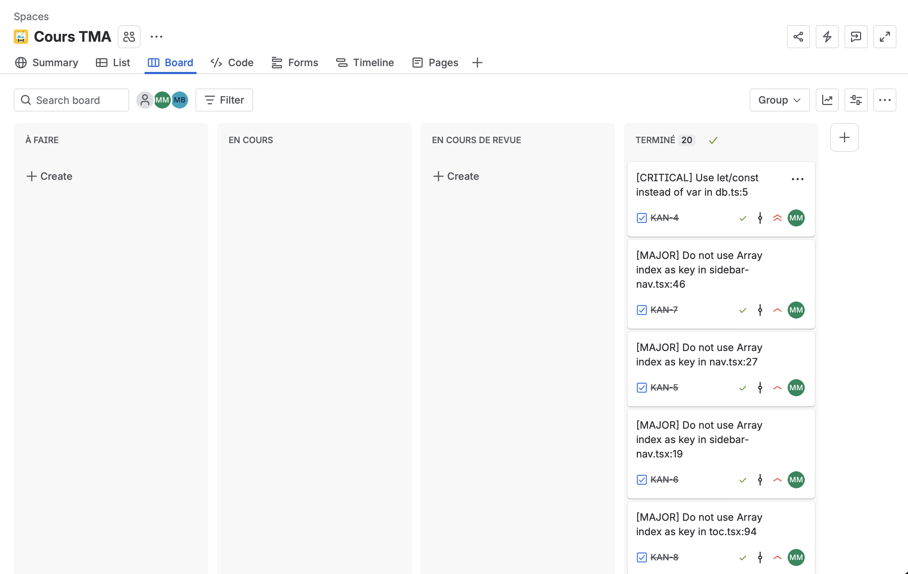
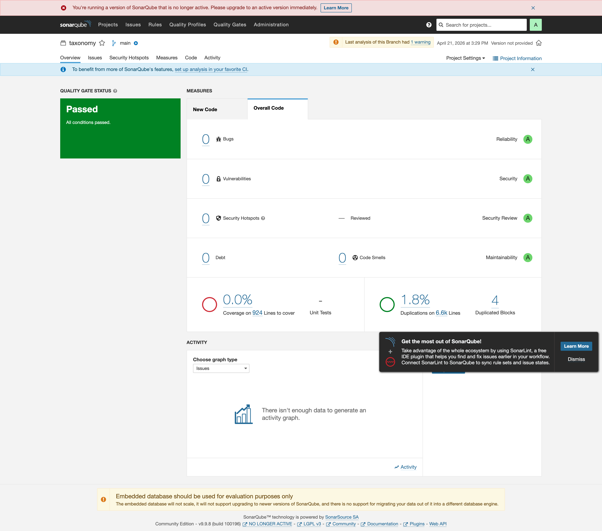

Maxime Mansiet
Chef de projet · Tech Lead
Architecture, revue de code, suivi qualité. Prend les fixes critiques et les bugs de page.tsx.
6 tickets — KAN-4, 11, 12, 21, 22, 23
Architecture, revue de code, suivi qualité. Prend les fixes critiques et les bugs de page.tsx.
Nettoie le cluster nav : remplace les key={index} par des identifiants stables sur tous les composants nav.
Supprime les imports morts, résout les TODO à enjeu sécurité, exécute SonarQube, valide la chaîne.
Une application Next.js 13 App Router complète : Server Components, MDX via Contentlayer, NextAuth, Prisma, Stripe. Un monorepo réel, production-grade, abandonné depuis 18 mois — parfait terrain de maintenance.
| Critère | Statut |
|---|---|
| Open source (MIT) | OK |
| Application web + API | OK |
| Exécutable localement | OK |
| Tests quasi inexistants | OK |
| Projet inactif | OK |
| Plusieurs dizaines de fichiers | OK |
| Historique Git riche | OK |
| Axe | Engagements du fork |
|---|---|
| Stabilité | Corriger var globaux + expressions sans effet (page.tsx) qui provoquent des comportements non déterministes. Rendre NEXTAUTH_URL optionnel pour éviter les crashs preview Vercel. |
| Performance | Supprimer les composants définis en plein render (calendar.tsx), remplacer les key={index} par des identifiants stables dans toutes les nav. |
| Sécurité | Lever les TODO de subscription.ts, route.ts, post.ts. Valider les secrets au build via @t3-oss/env-nextjs. |
| Ergonomie & a11y | Non-régression des parcours nav (desktop + mobile) via tests Playwright. |
| Anomalies | Returns manquants dans getXFromParams, assertion de type inutile, imports inutilisés. |
| Fonctionnalités | Mise en place d'une chaîne de qualité (SonarQube + Jira + Playwright) là où il n'en existait aucune. |
La transition directe En cours → Terminé est désactivée. Impossible de court-circuiter la revue.
En cours de revue matérialise la validation par un pair. Le chef de projet valide les fixes du responsable refactoring, et inversement.

| Sévérité | Règle Sonar | Issues | Tickets | Description |
|---|---|---|---|---|
| Critical | S3504 | 1 | 1 | var global dans db.ts |
| Major | S6479 | 6 | 6 | key={index} dans les listes React (nav, sidebar, toc, mobile, main) |
| Major | S6478 | 2 | 2 | Composant défini pendant le render (calendar) |
| Major | S905 | 3 | 3 | Expressions sans effet / return manquant |
| Minor | S1128 | 7 | 3 | Imports inutilisés (groupés par fichier) |
| Minor | S4325 | 1 | 1 | Assertion de type superflue |
| Info | S1135 | 4 | 4 | Commentaires TODO non résolus |
| Total | 24 | 20 | ||
Écart 24 → 20 : la règle S1128 (imports inutilisés) a été traitée en un ticket par fichier impacté plutôt qu'en un ticket par import, pour qu'un seul commit résolve le ticket.

Capture prise après les commits fix(KAN-X). L'analyse initiale (avant fixes) a servi à créer les 20 tickets. Le script scripts/screenshot-sonar.mjs reproduit la capture à la demande.
KAN-4 (var), KAN-11, KAN-12 (calendar), KAN-21, KAN-22, KAN-23 (bugs page.tsx)
KAN-5 à 10 (nav key={index}), KAN-13 (imports page.tsx)
KAN-14, 15, 16 (imports, assertion), KAN-17 à 20 (TODO)
fix(KAN-X):) — traçabilité Git ↔ Jira garantie.
var global à un cast globalThis.var prisma: PrismaClient if (process.env.NODE_ENV === "production") { prisma = new PrismaClient() } else { // globale modifiée sans type safety if (!global.prisma) { global.prisma = new PrismaClient() } prisma = global.prisma }
// globalThis cast, pas de 'var' const globalForPrisma = globalThis as unknown as { prisma: PrismaClient } export const db = globalForPrisma.prisma || new PrismaClient() if (process.env.NODE_ENV !== "production") globalForPrisma.prisma = db
4fa4c07
→ SonarQube re-scan : issue S3504 disparaît.
| Type | Spec | Couverture | Non-régression |
|---|---|---|---|
| Usuel | home.spec.ts | Accueil, nav desktop, liens principaux | — |
| Non-régression | navigation.spec.ts | Clés stables dans nav/sidebar/toc/mobile | KAN-5 à 10 |
| Non-régression | blog.spec.ts | Toc + rendu MDX | KAN-8 |
| Non-régression | docs.spec.ts | Imports supprimés · rendu page.tsx |
KAN-13..15, 21..23 |
| Extrême | responsive.spec.ts | Mobile Pixel 7 · ouverture/fermeture menu | KAN-9 |
Cas d'erreur testés dans chaque spec : 404 explicite, viewport étroit, URL malformée.
playwright.config.ts
import { defineConfig, devices } from "@playwright/test" export default defineConfig({ testDir: "./tests", fullyParallel: true, reporter: [["html"], ["list"]], use: { baseURL, trace: "on-first-retry" }, projects: [ { name: "chromium-desktop", use: devices["Desktop Chrome"] }, { name: "chromium-mobile", use: devices["Pixel 7"] }, ], webServer: { command: "pnpm dev", url: baseURL } })
# 1. Dev server auto-lancé par Playwright pnpm exec playwright test # 2. Mode UI interactif pnpm exec playwright test --ui # 3. Ouvrir le dernier rapport HTML pnpm exec playwright show-report
fix(KAN)TESTS.md comme contrat de non-régressiongithub.com/AirKyzzZ/atelier2-DEVE427 · jira KAN
MM · GL · MB — DEVE427 · avril 2026